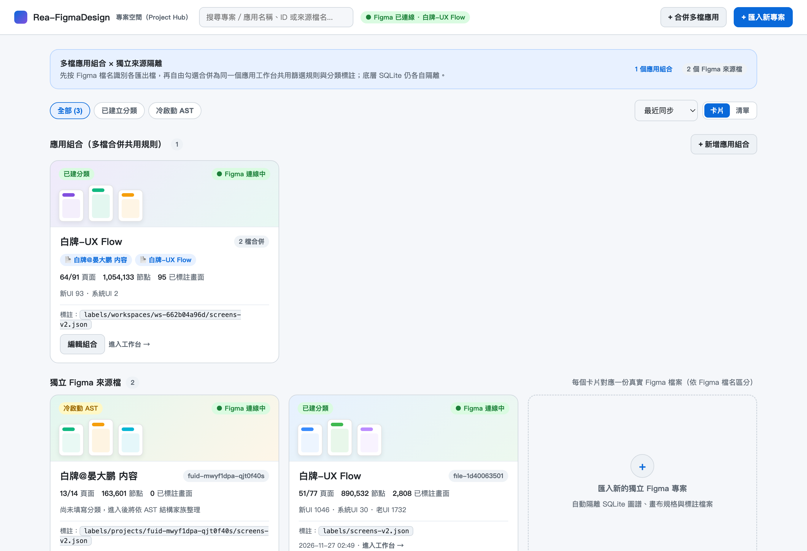

第 01 幕 · 多檔組合起點
不用硬把檔案合併，在專案空間直接把相關設計檔勾進來
真實設計團隊常常把同一個 App 拆成「主流程檔」與「新版迭代檔」（圖中的 白牌-UX Flow 與 白牌@晏大鵬 內容）。打開 Rea 的 專案空間（Project Hub），就能點右上角「+ 合併多檔應用」，把它們組成同一套標準分類。
Rea-FigmaDesign · 專案空間（Project Hub）
多檔應用組合 × 獨立來源隔離

1
上方：多檔應用組合把
白牌@晏大鵬 內容 與 白牌-UX Flow 綁成同一個產品工作區，合計 64/91 頁 · 1,054,133 節點。2
下方：底層來源仍獨立每張卡片對應一份真實 Figma 檔案，各自保留獨立 SQLite 與冷啟動／已建分類狀態，互不覆蓋。
3
右上角：隨時切換連線綠色狀態膠囊顯示目前 Figma 插件連線中的檔案，手機端／PC Web 端還能各設畫布識別尺寸。
兩份不同 Figma 檔裡面都有一樣的節點 ID（例如 10:1）會衝突嗎？
不會。組合工作台在記憶體與標註鍵值內統一使用
sourceId::nodeId 複合識別碼（例如區分哪一份檔案的 11728:726900），並可為不同端（手機端 360–430px vs 網頁 PC 端 1280–1920px）個別設定畫布白名單規則，避免誤把元件庫卡片當成獨立頁面。